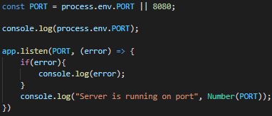
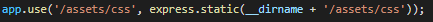
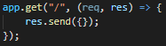
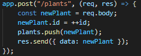
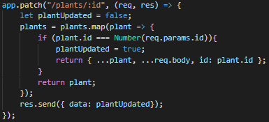
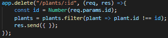

Code Snippets
Simple App Listener

When you want to give your application a port to listen on, this is the way to do it. It has an error handler that takes any possible feedback together with a console log that says you are on the port "x" if your program is running correctly. Take a look on the advanced app listener to get an insight of how to use it with enviroment variables.
Dependencies

This is what it looks like when you have installed the express dependency correct. This line of code would be created inside the "package.json" file. More information of how to install it through the commando promt: click here.
Express Require

When express is installed through the commando prompt, more information here, you have to import it. this is done by the two following lines of code seen below.
Advanced App Listener
The code below illustrates how that we are now using the enviroment variable. We give the opportunity to either use the env port OR the hardcoded 8080 port. This is smart when we are working in different environments that have different setups of ports they are listening to. So instead of changing the port every time, we make the code "smart" and changes according to the information its given. And if there is none other enviroment variables, it just uses the hardcoded port, in this case "8080".
App Use
When you want to use images on your page - you have to use the following line of code, but with your own path to the images. This works with express to showcase your statics.
API - Get
This is a very normal and wide spread get request. the "/" is the reference of where it takes you to on the webpage. the "/" stands for the startpage. A get request is used to receive data on the webpage.
API - Post
All the text inside the app.post might be confusing for some. But dont worry - its just a template of how it could look like, and I won't go into details. Post requests differs from the get request by instead of wanting to request data from a specified resource, it is used to send data to a server to create/update a resource. In this case, it something with plants!
API - Patch
All the text inside the app.post might be confusing for some. But dont worry - its just a template of how it could look like, and I won't go into details. Patch request is somewhat of an "update" request you could say so. It is updating data from a database or an array. You are doing it by instead of just take any, in this case, plant - you are choosen a specific plant by its id. If you want to know more and see it in action, go to the API page.
API - Delete
All the text inside the app.post might be confusing for some. But dont worry - its just a template of how it could look like, and I won't go into details. Just like the patch request, the delete api function does the same thing with the id. To resume, it takes the specific id of the wanted item, but instead of updating it as the patch request, it throws the item into the bin! As in the word, it deletes it.